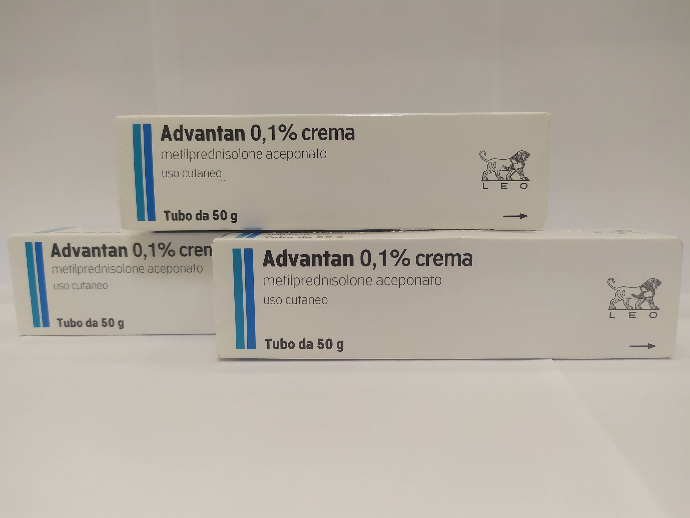

Контактна інформація:
Ціна: 500 грн/уп.
В наявності
Виробник: Італія
Ціна: 500 грн/уп.
В наявності
Саме в FarmItal ви можете купити Адвантан крем 50г, Advantan crema 50g в Україні. Гарантовано якісні ліки з Італії!
Доставка Advantan crema 50g здійснюється транспортними компаніями, терміни виконання замовлення обумовлюються менеджером Фармітал. Ви можете замовити Адвантан крем 50г у містах: Одеса, Херсон, Чернігів, Сєверодонецьк, Бердянськ, Бровари, Дніпро, Вінниця, Київ, Слов'янськ, Полтава, Краматорськ, Біла Церква, Кам'янське, Маріуполь, Чернівці, Олександрія, Кам'янець-Подільський, Львів, Запоріжжя, Кропивницький, Житомир, Івано-Франківськ, Суми, Черкаси, Костянтинівка, Мелітополь, Кривий Ріг, Рівне, Луцьк, Нікополь, Павлоград, Ужгород, Кременчук, Лисичанськ, Хмельницький, Тернопіль, Харків, Миколаїв, а також в інших населених пунктах України.
крем білого кольору
1 г крему містить 1 мг (0,1%) метил преднізолону ацепонату;
допоміжні речовини: децилолеат, гліцерину моностеарат 40-55%, спирткетостеариловий, жир твердий, совтизан 378, поліоксил-40-стеарат, гліцерин 85%, натрію едетат, спирт бензиловий , бутилгідрокситолуол, вода очищена;
Жирна мазьдля зовнішнього застосування, крем для зовнішнього застосування, емульсія для зовнішнього застосування.
Ендогенна екзема, контактний, алергійний дерматити, дегенеративна, дисгідротична справжня екзема, дитяча екзема з 6-місячного віку, сонячний дерматит.
Крем Адвантан знизьким вмістом жиру та високим вмістом води підходить для лікування гострих запальних процесів і мокрої екземи.
Адвантан наноситься на уражені ділянки шкіри 1 раз на день тонким шаром. Тривалість застосування у звичайних випадках не повинна перевищувати для дорослих 12 тижнів, для дітей – 4 тижні.
В окремих випадках застосування Адвантану може супроводжуватися місцевими реакціями: свербіж, печіння, почервоніння шкіри абопоява пухирців. При тривалій терапії кортикостероїдами спостерігаються випадки потоншання шкіри (атрофії), розширення капілярів шкіри (телеангіектазії), стриї або акнеподібні зміни шкіри. У результатах проведених клінічних досліджень Адвантану, при яких препарат застосовувався дорослими до 12 тижнів, а дітьми до 4 тижнів, таких побічних явищ не встановлено. У поодиноких випадках при лікуванні Адвантаномможуть виникати характерні для локального застосування кортикостероїдів побічні дії: фолікуліт, гіпертрихоз, пері оральний дерматит, алергійні реакції шкіри наодин з компонентів препарату.
Адвантан протипоказаний при туберкульозі шкіри або проявах сифілісу наділянці, передбачуваній для застосування, а також при вірусних інфекціях (вітряна віспа, оперізувальний лишай, реакція на щеплення тощо), підвищена чутливість до метил преднізолону ацепонату або будь-якого іншого компонента препарату.
Зберігати крем та емульсію при температурі не вище 25° С,в місцях недоступних для дітей.
Термін придатності крему – 3 роки.